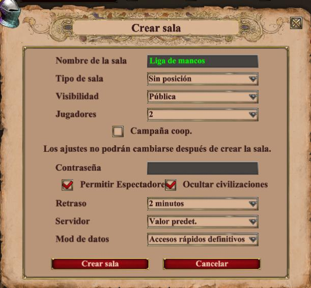
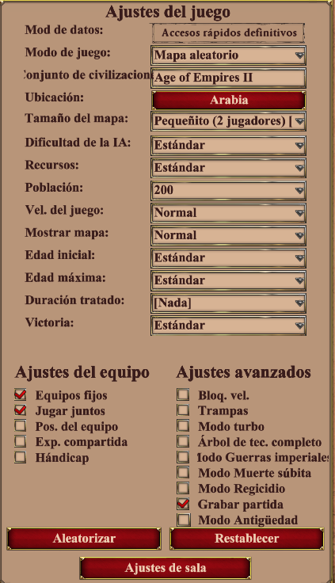

Formato del Torneo
Características Principales
- Modalidad: 1v1
- Sistema: Liga todos contra todos
- Partidas: Al mejor de 3 (Bo3)
- Rango ELO permitido: 800-1400
- Cierre de inscripciones: 29/11/2024 a las 22:00hs UTC-3
Sistema de Categorías y Zonas
Los competidores serán divididos en Categorías según su ELO, con un máximo de 20 participantes por Categoría. Cada Categoría se subdividirá en 2 Zonas (Zona 1 y Zona 2) de máximo 10 participantes cada una.
En caso de cantidad impar de participantes al momento de realizar la división, la Zona 2 contará con mayoría de participantes.
Rangos de ELO por Categoría y Zona:
- Categoría A
- Zona 1: 1300-1400
- Zona 2: 1200-1299
- Categoría B
- Zona 1: 1100-1199
- Zona 2: 1000-1099
- Categoría C
- Zona 1: 900-999
- Zona 2: 800-899
Los rangos de ELO mencionados son referenciales y podrán ajustarse según la cantidad y ELO de los participantes inscriptos, manteniendo siempre el espíritu de una competencia equilibrada.
Proceso de División en Zonas:
- Los participantes serán listados en orden descendente según su ELO.
- Se asignarán a la Categoría en la que se hayan inscripto, salvo que su ELO sea superior al rango permitido para dicha Categoría; En cuyo caso serán reubicado en la Categoría que corresponda.
- Dentro de cada Categoría, la división en Zonas se realizará de la siguiente manera:
- Los primeros X participantes conformarán la Zona 1. Donde X se corresponde con el resultado de dividir en 2 la cantidad de participantes de la categoría, habiendo previamente restado 1 sólo en caso de ser impar la cantidad de participantes.
- Los siguientes X participantes conformarán la Zona 2. Donde X se corresponde con el resultado de dividir en 2 la cantidad de participantes de la categoría, habiendo previamente sumado 1 sólo en caso de ser impar la cantidad de participantes.
- Este proceso se repetirá para cada Categoría subsiguiente
- El ELO será validado en aoe2insights.com
- La validación se realizará una vez cerradas las inscripciones
- En caso de haber diferencia entre el ELO informado y el validado, quedará a criterio de los administradores cuál será el ELO a tener en cuenta.
Configuración de Sala
Configuración de Partida
Civilizaciones
- Se permiten todas las civilizaciones del juego.
- Un jugador no puede repetir una misma civilización durante la misma serie.
Mapas
Pool de Mapas
- Arabia
- Arena
- Atacama
- Bosque Costero
- Cuenca del oro
- Cuatro lagos
- Karst
- Nómada
- Oasis
- Piedras rúnicas
- Tierras bajas
- Yucatán
Selección de Mapas
Ninguno de los jugadores puede seleccionar el mapa designado para la partida desempate.
- El primer mapa será elegido por el jugador con mayor ELO.
- El segundo mapa será elegido por el jugador con menor ELO.
- En caso de llegar a una tercera partida, el tercer mapa será asignado por los administradores (al azar) de entre los mapas disponibles en el pool de mapas.
- No se puede jugar 2 veces el mismo mapa en una serie.
- Para comparar el ELO de cada jugador se debe tener en cuenta su respectivo ELO al momento de disputar cada partida.
- El tercer mapa será informado junto con los detalles de cada serie.
Series y Partidas
Tiempo y Organización
- Se proporcionará un cronograma completo de la competencia a través del servidor oficial de Discord.
- El cronograma incluirá:
- Todos los encuentros a disputarse
- Rango de fechas para la disputa de cada serie
- Número de Jornada
- Jugadores que compiten
- Cada serie debe disputarse en el lapso de tiempo indicado por los administradores.
- El período comienza con la publicación oficial de las Series.
Coordinación de Partidas
Una vez informadas las series y presentados entre sí los jugadores, será responsabilidad de éstos la coordinación y realización de la disputa de las partidas de la serie.
En caso de no lograr un acuerdo para la disputa de una partida, los jugadores podrán solicitar la mediación de los administradores quienes tendrán total facultad de dar por perdido el partido a ambos jugadores si no se llega a un acuerdo dentro de los tiempos estipulados.
Reporte de Resultados
- Username de ambos competidores
- Ganador de la partida
- Archivo de repetición (obligatorio)
- Comentarios sobre la partida (opcional)
- El ganador de cada partida tiene la obligación de informar el resultado
- El reporte debe realizarse en el servidor oficial de Discord en el canal correspondiente a su Categoría y Zona
- Los resultados deben reportarse partida por partida
- Ninguna partida será válida sin su archivo de repetición
- En caso de requerir ayuda para localizar el archivo de repetición de la partida, será responsabilidad del participante informar esta situación en el chat-general del servidor oficial de Discord.
- Las repeticiones serán utilizadas para fiscalización y resolución de disputas
Sistema de Puntuación
| Acción | Puntos |
|---|---|
| Ganar una partida | +1 punto |
| Ganar la serie | +1 punto |
| No presentación | -1 punto |
Ganador de la Liga
Determinación del Ganador
- Habrá 1 ganador por cada Zona
- Será ganador de Zona el participante que sume la mayor cantidad de puntos al finalizar
- Los ganadores de cada Zona de una misma Categoría se enfrentarán entre sí en una serie al mejor de 5 (Bo5) para determinar el campeón de la Categoría
Sistema de Desempate
- Entre 2 jugadores: Partida única en mapa aleatorio definido por los administradores
- Entre 3 o más jugadores: Mini torneo todos contra todos (Bo1)
Reglas de Comportamiento
Tiempos Máximos
- Pausa máxima permitida: 5 minutos por jugador por partido
- Tiempo de reconexión: 15 minutos máximo
Normas de Conducta
- La partida podrá ser reiniciada solo si ambos jugadores están de acuerdo
- Queda prohibido el uso de:
- Insultos
- Apodos malintencionados
- Todo tipo de violencia
Sanciones
| Infracción | Sanción |
|---|---|
| No presentación sin aviso | Pérdida de serie y -1 punto |
| Uso de trampas | Descalificación de la competencia |
| Comportamiento antideportivo | Advertencia/Descalificación según gravedad |
Disposiciones Finales
Los administradores de la Liga de Mancos 2024 se reservan el derecho de realizar modificaciones al presente reglamento cuando lo consideren necesario para el correcto desarrollo de la competencia. Cualquier situación no prevista en este reglamento será resuelta por los administradores, cuyas decisiones serán inapelables y de cumplimiento obligatorio para todos los participantes.